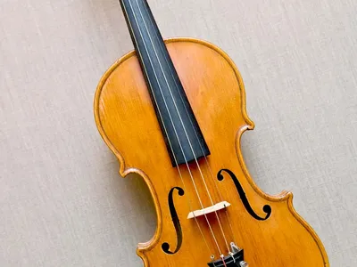

The piano is considered to be both a string and
percussion instrument. The strings are struck to produce the sound, but hammers hit the strings
via keys.
A piano is a musical instrument that evolved from
various keyboard-like and string instruments over time. The modern piano was invented by
Bartolomeo Cristofori and is a string and percussion instrument.
Guitar
What is a guitar in music?
Guitar, Plucked stringed
instrument. It normally has six strings, a fretted
fingerboard, and a soundbox with a pronounced waist. It probably originated in Spain in the
early 16th century. By 1800 it was being strung with six single strings; 19th-century
innovations gave it its modern form.
Modern classical guitar technique owes much to
Francisco Tárrega (1852–1909), and Andrés Segovia gave the instrument
prominence in the concert hall.
Violin

What is a violin in music?
The violin is probably the best known and most
widely distributed musical
instrument in the world.
As the "keeper of the rhythm," the drum provides the
foundation for the overall sound of music.Because a drum only has to be hit to make a sound, it
is also one of the simplest of the instruments.